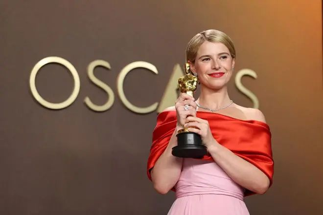
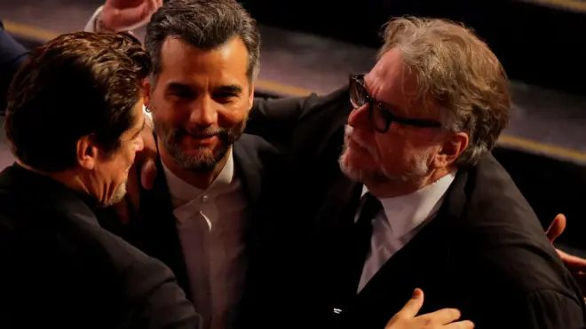
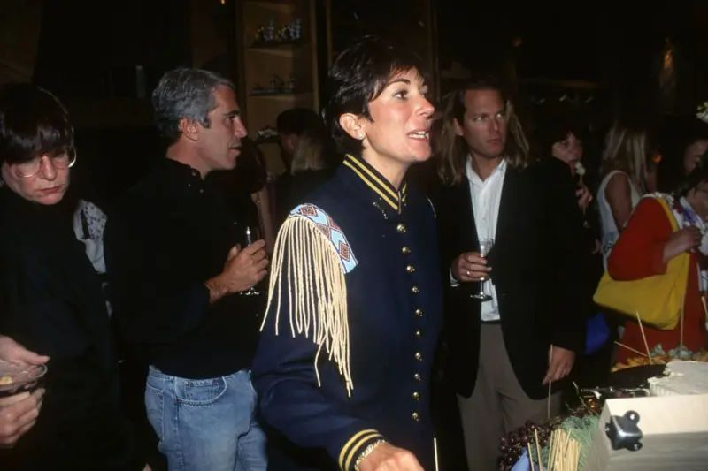
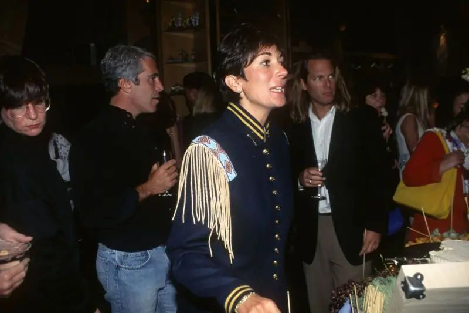

'They promised she'd be a model in São Paulo, but her destination was Epstein'
'Prometeram que ela seria modelo em São Paulo, mas seu destino era Epstein'
Warning: This report contains descriptions of sexual scenes.
Aviso: Esta reportagem contém descrições de cenas de sexo.
A dream that turned into a nightmare
Um sonho que se tornou pesadelo

Ana left home at age 16 to pursue the dream of becoming a model. She worked with an agency in southern Brazil, but a year later the work didn't appear.
Ana saiu de casa aos 16 anos para perseguir o sonho de ser modelo. Chegou a trabalhar com uma agência no Sul do Brasil, mas um ano depois os trabalhos não apareciam.
It was then that the owner of the agency told her that a friend from São Paulo, from another agency, would visit and would like to meet her.
Foi então que o dono da agência lhe disse que uma amiga de São Paulo, de outra agência, faria uma visita e gostaria de conhecê-la.
The conversation happened and Ana says she was invited to work in the capital. It was the early 2000s and the proposal seemed good. Her parents supported the decision: she would live in this woman's house, with other girls, and would have opportunities in Brazil's largest city.
A conversa aconteceu e Ana conta que foi convidada a trabalhar na capital paulista. Era o começo dos anos 2000 e a proposta pareceu boa. Seus pais apoiaram a decisão: ela moraria na casa dessa mulher, com outras meninas, e teria oportunidades na maior cidade do Brasil.
Ana, whose real name will not be revealed at her request, says she left for São Paulo with a paid ticket, shortly before turning 18.
Ana, cujo nome verdadeiro não será revelado a seu pedido, diz ter embarcado para São Paulo, com passagem paga, pouco antes de completar 18 anos.
When she arrived, the woman who had invited her, whom we will call Lúcia in this report, asked to keep her documents under the pretext of making a passport, Ana says.
Quando chegou, a mulher que a convidou, que nesta reportagem chamaremos de Lúcia, pediu para ficar com seus documentos sob o pretexto de que faria um passaporte, conta a brasileira.
According to Ana, Lúcia would spend months without returning her documentation.
Segundo Ana, Lúcia passaria meses sem devolver sua documentação.
The woman also announced, according to Ana, that she now had a debt that needed to be settled, since her plane ticket had been paid, plus a photo book. Ana said she discovered a few days later that there was no modeling work on the horizon.
A mulher também anunciou, de acordo com Ana, que ela agora tinha uma dívida que precisaria saldar, já que sua passagem aérea havia sido paga, além de um book de fotos. Ana disse que descobriu alguns dias depois que não havia nenhum trabalho de modelo no horizonte.
"The woman was actually a pimp. Things unfolded and when I realized, she was negotiating me for prostitution."
"A mulher era, na verdade, uma cafetina. A coisa foi se desenrolando e, quando eu vi, ela estava me negociando para prostituição."
One of the clients, she says, was American billionaire Jeffrey Epstein.
Um dos clientes, diz, foi o bilionário americano Jeffrey Epstein.
Years later, Epstein would be accused of operating a "vast network" of underage girls for sexual purposes. The billionaire died in a prison cell in New York in 2019, while awaiting retrial, a decade after being convicted as a sex offender.
Anos depois, Epstein seria acusado de operar uma "vasta rede" de meninas menores de idade para fins sexuais. O bilionário morreu em uma cela de prisão em Nova York em 2019, enquanto aguardava novo julgamento, uma década após já ter sido condenado como criminoso sexual.
The luxury hotel and the choice
O hotel de luxo e a escolha

Ana's account is the first in which a woman describes having been recruited for Jeffrey Epstein in Brazil.
O depoimento de Ana é o primeiro em que uma mulher conta ter sido aliciada para Jeffrey Epstein no Brasil.
To BBC News Brasil, Ana described encounters with the billionaire in São Paulo at a luxury hotel, says she went to a dinner and to at least one party in the city with him, as well as made trips to other parts of the world to meet him.
À BBC News Brasil, Ana descreveu encontros com o bilionário em São Paulo em um hotel de luxo, diz ter ido a um jantar e a ao menos uma festa na cidade com ele, além de ter feito viagens para outras partes do mundo para encontrá-lo.
The Brazilian said she was arranged fake employment as a model so she could get a visa and be able to go to the USA in the early 2000s.
A brasileira disse que lhe arranjaram emprego de fachada de modelo para que ela conseguisse um visto e pudesse ir aos EUA no começo da década passada.
She also said that Lúcia, the woman who had promised her a career in fashion, charged Epstein $10,000 for her services.
Ela contou ainda que Lúcia, a mulher que havia lhe prometido uma carreira na moda, cobrou US$ 10 mil de Epstein por seus serviços.
Ana's account was corroborated by documents she presented and crossed with testimonies and information gathered by the reporting.
O relato de Ana foi corroborado por documentos apresentados por ela e cruzado com depoimentos e informações colhidos pela reportagem.
Legal assessment: A labor auditor heard by the reporting evaluated that, in theory, the situation described by Ana could be framed as human trafficking crime. If proven, potential people involved in Brazil in the episode could still be held responsible, as there are international norms pointing out that this type of crime does not prescribe, meaning it can be analyzed at any time, regardless of when it happened.
Avaliação legal: Um auditor-fiscal do trabalho ouvido pela reportagem avalia que, em tese, a situação descrita por Ana poderia ser enquadrada como crime de tráfico de pessoas. Se comprovado, potenciais envolvidos no Brasil no episódio ainda poderiam ser responsabilizados, já que existem normativas internacionais que apontam que esse tipo de crime não prescreve, diz o auditor.
Ghislaine Maxwell and jean-luc Brunel
Ghislaine Maxwell e jean-luc Brunel

After being "chosen" by Epstein at the luxury hotel, Ana recounts that she and two other girls were taken by Lúcia to a party happening in the city a few days later. She doesn't quite remember where this event took place, but it could have been in the Brigadeiro Faria Lima avenue area, the financial district that houses technology companies in São Paulo.
Depois de ser "escolhida" por Epstein, Ana conta que ela e outras duas garotas foram levadas por Lúcia a uma festa que aconteceria alguns dias depois. Ela já falava inglês, ainda que sem fluência, e disse que ele chegou a lhe pagar aulas.
Ana describes that when she arrived, she saw Epstein waiting for her in front of the building. "The building was full of cameras. He even made a comment: 'It's very safe here, isn't it?'"
Ana descreve que, ao chegar, viu que Epstein a esperava na frente do edifício. "O prédio era todo cheio de câmeras. Ele ainda fez um comentário: 'É muito seguro aqui, né?'"
It was on that day that Ana says she also met Ghislaine Maxwell, Epstein's companion and accomplice, and Jean-Luc Brunel, the French model agent accused of recruiting girls for the criminal.
Foi nesse dia que Ana contou ter conhecido também Ghislaine Maxwell, companheira e cúmplice de Jeffrey Epstein, e Jean-Luc Brunel, o agente de modelos francês acusado de aliciar meninas para o criminoso.
BBC News Brasil found in the files of the U.S. Department of Justice an email from Ghislaine Maxwell in which she comments on a visit to São Paulo at the same time cited by Ana.
A BBC News Brasil encontrou nos arquivos do Departamento de Justiça dos EUA um e-mail de Ghislaine Maxwell na qual ela comenta uma visita a São Paulo na mesma época citada por Ana.
In the messages, Maxwell converses with a high-level executive of a multinational, and tells him she would be staying at the luxury hotel mentioned. They comment about a party. BBC News Brasil confirmed with the interlocutor that the conversation and Maxwell's trip in fact existed.
Nas mensagens, Maxwell conversa com um alto executivo de uma multinacional, e conta a ele que ficaria hospedada no hotel de luxo mencionado. Eles comentam sobre uma festa. A BBC News Brasil confirmou com o interlocutor que a conversa e a viagem de Maxwell de fato existiram.
The former Epstein companion denied committing crimes, but is currently serving a 20-year sentence after being convicted in 2022 of recruiting and trafficking adolescents for sexual abuse by the billionaire.
A ex-companheira de Epstein negou ter cometido crimes, mas está atualmente cumprindo uma pena de 20 anos de prisão após ser condenada em 2022 por recrutar e traficar adolescentes para abuso sexual pelo bilionário.
Ana says she does not have many memories of that day in São Paulo, but there were many models at the event. In her recollection, Ghislaine Maxwell and Epstein did not appear to be a couple.
Ana diz que não tem muitas memórias desse dia em São Paulo, mas que havia muitas modelos no evento. Na sua lembrança, Ghislaine Maxwell e Epstein não pareciam ser um casal.
It was during the party that Ana says she was informed by Epstein: "Tomorrow I'm going to Paris and you're going with me. I've already arranged it with (Lúcia, fictional name)."
Foi durante a festa que Ana diz ter sido informada por Epstein: "Amanhã estou indo a Paris e você vai junto comigo. Já combinei com a (Lúcia, nome fictício)."
The arrangement and the relationship
O arranjo e o relacionamento

According to Ana, Epstein said he had already arranged with Jean-Luc Brunel that he would hire her at his modeling agency in New York and that the Frenchman already had all her documents, delivered by Lúcia, to do the necessary procedures.
Segundo Ana, Epstein disse que já havia acertado com Jean-Luc Brunel que ele a contrataria em sua agência de modelos em Nova York e que o francês já tinha todos os documentos dela, entregues por Lúcia, para fazer os trâmites necessários.
Ana presented BBC News Brasil with her passport. The document contains an American business visa and has a notation with the name Karin Models New York, in reference to Brunel's agency in the United States at the time.
Ana apresentou à BBC News Brasil seu passaporte. O documento contém um visto americano de negócios e tem uma anotação com o nome Karin Models New York, em referência à agência de Brunel nos Estados Unidos à época.
"My visa was issued as if I was a model for Karin Models, which I don't even know if it really existed. I never went to the agency," Ana says.
"Meu visto foi emitido como se eu fosse uma modelo da Karin Models, que eu nem sei se de fato existia. Eu nunca fui na agência", diz Ana.
The suspicion of authorities was that Brunel used the modeling agency as a way to attract girls in various countries, including minors, to Epstein's network—Ana's case would be an example of this.
A suspeita das autoridades era de que Brunel usava a agência de modelos também como forma de atrair garotas em diversos países, inclusive menores de idade, para a rede de Epstein — o caso de Ana seria um exemplo disso.
Who paid for these "front" visas of the agency was Epstein himself, according to testimony given to U.S. Justice by a former employee of the agency, who testified as a witness.
Quem pagava por esses vistos "de fachada" da agência era o próprio Epstein, segundo relato à Justiça dos EUA dado por uma ex-funcionária d agência, que depôs como testemunha.
Ana relates that after the first encounter in São Paulo, she developed a kind of relationship with Epstein over about four months.
Depois de ser escolhida, Ana conta que subiu ao quarto do hotel paulistano com Epstein. Foi quando relatou um primeiro ato sexual — ele pediu que ela tirasse a roupa e começou a se tocar.
She remembers an episode when they were on the plane heading to Paris, when Epstein told her that Jean-Luc Brunel had asked to have sex with her. The billionaire refused and said, according to Ana: "I didn't let him because you are mine."
Ela se lembra de um episódio, quando estavam no avião a caminho de Paris, quando Epstein disse a ela que Jean-Luc Brunel teria pedido para transar com ela. O bilionário recusou e disse, segundo Ana: "Eu não deixei porque você é minha."
"I don't know if I felt grateful or more terrified by that. At the same time I felt protected by him. Up to then he was being very nice to me."
"Eu não sei se eu fiquei agradecida ou mais apavorada com aquilo. Ao mesmo tempo me sentia protegida por ele. Até então ele estava sendo muito legal comigo."
From then on, Ana says she looked at Brunel with suspicion. "It was the wolf looking at the lamb. Always with eyes of devouring, both for me and for other girls."
Desde então, Ana diz que passou a olhar com receio para Brunel. "Era o lobo olhando para o carneirinho. Sempre com olhos de devorar, tanto pra mim quanto para outras meninas."
The island and the understanding
A ilha e a compreensão

Another trip they took, according to her, was to Epstein's island in the Caribbean, a private island in the U.S. Virgin Islands.
Outra viagem que fizeram, segundo ela, foi à ilha de Epstein, no Caribe, uma ilha particular nas Ilhas Virgens Americanas, pertencentes aos EUA.
She says she did not see underage girls, but everyone seemed very young, like her, who had just turned 18 at that moment.
Ela diz que não ter visto meninas menores de idade, mas que todas pareciam muito jovens, como ela, que naquele momento tinha acabado de fazer 18 anos.
A conversation that marked her was when Epstein asked if she used drugs or drank, which she denied. "That's important," he said.
Uma conversa que lhe marcou foi quando Epstein perguntou se ela usava drogas ou bebia, o que ela negou. "Isso é importante", ele teria dito.
She remembers there were many women on the island, who stayed together in one room. "And I had a room just for myself. I felt like he protected me from many things."
Ana conta que havia muitas mulheres na ilha, que ficavam juntas em um quarto. "E eu tinha um quarto só pra mim. Eu sentia que ele me protegia de muita coisa."
She says she saw nothing she considered illegal while with him. "Looking back, I see that at various moments he would send me out of the house, do something. Go to a museum, go to classes," she recounts, referring to English lessons she says she received.
Ela diz que não via nada que considerasse ilegal enquanto estava com ele. "Olhando para trás, vejo que em vários momentos ele me mandava sair de casa, fazer alguma coisa. Ir a um museu, ir às aulas [ela relata ter recebido aulas de inglês]", conta.
After about four months of interaction, Ana says she began to feel uncomfortable having to continue lying to her parents about what was happening.
Depois de cerca de quatro meses de convivência, Ana diz que começou a ficar incomodada por ter de continuar mentindo para os pais sobre o que estava acontecendo.
"So I told Jeffrey that I didn't want to go anymore, that I wanted to stay near my family and study," she recounts, adding that she was living at the time with the help of the billionaire.
"Então falei para Jeffrey que não queria mais ir, que queria ficar perto da família e estudar", conta ela, que vivia nesta época com a ajuda do bilionário.
Reflection and perspective
Reflexão e perspectiva

"Looking back, I see that he got me out of Lúcia's hands. He saved me from her. She's the one who was abusing me," Ana reflects.
"Olhando pra trás, eu vejo que ele me tirou das mãos da Lúcia. Ele me salvou dela. Ela é que estava abusando de mim", diz.
"He treated me well. Everything I needed... I didn't need to ask for anything. He gave me things."
"Ele me tratava bem. Tudo que eu precisava... Eu não precisava pedir nada. Ele me dava as coisas."
She says they maintained sexual relations only once. "He liked to sleep spooning, affection, foot massage."
Ela diz que eles só mantiveram relações sexuais uma vez. "Ele gostava de dormir de conchinha, de carinho, de massagem no pé."
When reflecting on her experience compared to what is now known about the crimes and accusations against Epstein, she evaluates that she was lucky.
Ao refletir sobre sua experiência em comparação ao que se sabe hoje sobre os crimes e acusações contra Epstein, ela avalia que teve sorte.
"I have no intention of defending or saying he was nice. With me it was this way, but I feel very much for the girls who didn't have the same luck as me. I believe in divine justice, and no one escapes it, not even by dying."
"Não tenho jamais a intenção de defender nem dizer que ele era bonzinho. Comigo foi desse jeito, mas sinto muitíssimo pelas meninas que não tiveram a mesma sorte que eu. Acredito na justiça divina, e dela ninguém escapa, nem morrendo."
Could this be human trafficking?
Poderia isso ser tráfico de pessoas?

At the request of BBC News Brasil, labor auditor and researcher Maurício Krepsky analyzed the account given by Ana to the reporting and said that the case could in theory be framed as human trafficking crime.
A pedido da BBC News Brasil, o auditor-fiscal do trabalho e pesquisador Maurício Krepsky analisou o relato feito por Ana à reportagem e disse que o caso poderia ser enquadrado, em tese, como tráfico de pessoas.
"The case presents all the indicators of human trafficking for purposes of sexual work, although inserted in a context of sexual exploitation," he states.
"O caso apresenta todos os indicadores de tráfico de pessoas para fins de trabalho escravo, ainda que inserido em um contexto de exploração sexual", afirma.
"The activity of sex professional is recognized by the Ministry of Labor and Employment. What is forbidden by law is the exploitation of someone for sexual purposes through coercion, deception, abuse or transportation for exploitation, elements that configure human trafficking."
"A atividade de profissional do sexo é reconhecida pelo Ministério do Trabalho e Emprego. O que é vedado pela lei é a exploração de alguém para fins sexuais mediante coação, engano, abuso ou transporte para exploração, elementos que configuram tráfico de pessoas."
He also reminds that there are international norms saying that this type of crime does not prescribe—meaning it can be analyzed at any time, regardless of when it happened.
Ele lembra também que há normativas internacionais que dizem que esse tipo de crime não prescreve — ou seja, pode ser analisado em qualquer momento, independentemente de quando aconteceu.
Krepsky cites precedents with this same understanding of cases dating back to the dictatorship period that were judged recently.
Krepsky cita precedentes com esse mesmo entendimento de casos que remetem até ao período da ditadura e foram julgados recentemente.
The auditor has no involvement with the ongoing investigation into a possible Epstein recruitment network in Brazil, which is handled by the Federal Public Ministry (MPF).
O auditor não tem envolvimento com a investigação em andamento sobre uma possível rede de aliciamento de Epstein no Brasil, que é tocada pelo Ministério Público Federal (MPF).
Prosecutor Cinthia Gabriela Borges, of the National Unit for Combating International Human Trafficking and Migrant Smuggling at the MPF, spoke previously to BBC News Brasil about the importance of potential victims of the Epstein network telling what they went through.
A procuradora Cinthia Gabriela Borges, da Unidade Nacional de Enfrentamento ao Tráfico Internacional de Pessoas e ao Contrabando de Migrantes, do MPF, falou anteriormente à BBC News Brasil da importância de que potencias vítimas da rede de Epstein contem o que passaram.
"It is fundamental in these cases for victims to participate in the investigation, so they can bring to light the elements of how recruitment was done."
"É fundamental nesses casos a participação das vítimas na investigação, para que possam trazer à luz os elementos de como foi o recrutamento."
Borges also said that women who maintained contact with Epstein are not being investigated in the process, and that the objective is to understand if there were people specialized in recruiting and recruiting women for sexual purposes.
Borges disse ainda que as mulheres que mantiveram contato com Epstein não estão sendo investigadas no processo, e que o objetivo é entender se havia pessoas especializadas em aliciar e recrutar mulheres para fins sexuais.
"Victims, as a rule, are not considered responsible for any acts they may commit, in the situation of being a victim of human trafficking," she stated.
"As vítimas, em regra, não são consideradas responsáveis por eventuais atos que elas venham a praticar, na situação de vítima de tráfico de pessoas."